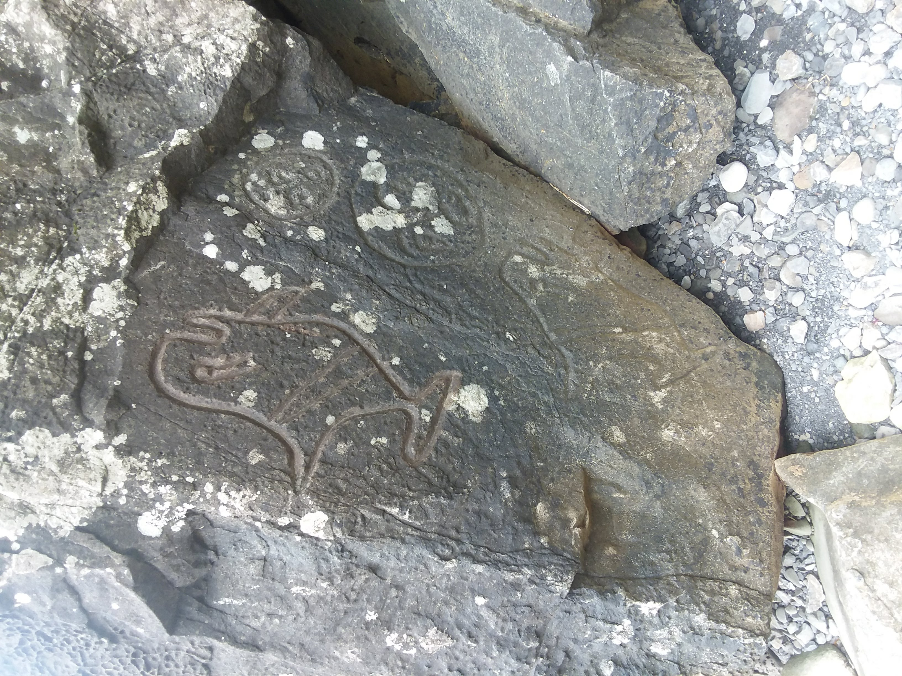

Between May 16 and May 27, 2018 I went on a trip to Seattle to visit a good friend of mine. Here's the first picture of the journey taken taken from the Denver airport. I had to stop there before completing the final leg of the flight:

Here is the first hike I went on after landing. We followed this river for a few miles.

This is a photo of the Puget Sound, the area where water from the Pacific Ocean reaches Seattle.

Washington has an abundance of slugs crawling all over the place - you really have to watch your step.

A lot of the trees displayed this phenomenon where it appears like they're growing off the side of another tree.

Here is a photo of the friend I went to visit during one of our hikes on the West Coast.

The area has these Native American petroglyphs known as the Wedding Rocks on the beaches. They were made by the Makah tribe long ago.
After our visit to the West Coast, we went further inland and visited Hoh Rainforest, as shown here.

After Hoh Rainforest we visited the ocean again and I took this photo.

Finally on my way home after a fun trip.

Hope you enjoyed the pictures of my trip!